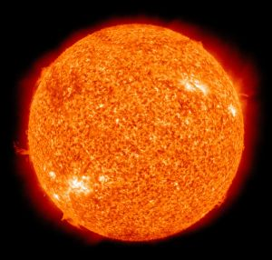
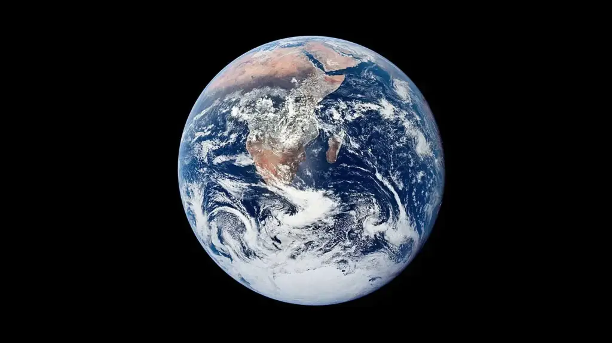

☀️ Sun
The Sun is the star at the center of the Solar System and provides the energy that sustains life on Earth.
☿ Mercury
Mercury is the smallest planet and closest to the Sun. It has no atmosphere and extreme temperature changes.
♀ Venus
Venus has a thick, toxic atmosphere and is the hottest planet due to a runaway greenhouse effect.
🌍 Earth
Earth is the only known planet to support life. It has water, oxygen, and a diverse ecosystem.
♂ Mars
Known as the Red Planet, Mars has the largest volcano in the solar system and is being studied for human colonization.
♃ Jupiter

Jupiter is the largest planet with a strong magnetic field and dozens of moons including Ganymede, the largest moon.
♄ Saturn

Famous for its beautiful rings, Saturn is a gas giant with more than 80 moons.
♅ Uranus

Uranus rotates on its side and has a pale blue color due to methane in its atmosphere.
♆ Neptune

Neptune is the farthest known planet, known for its deep blue color and strong winds.